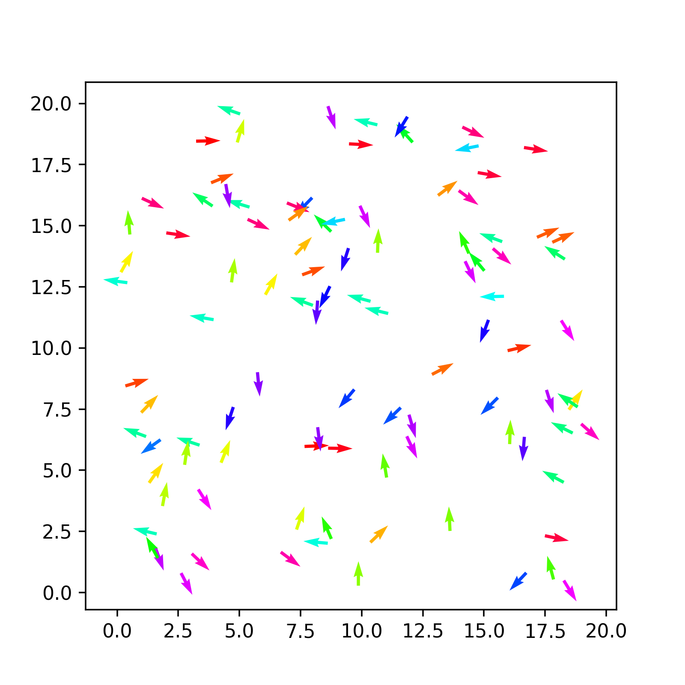

We have constructed all the objects we neeed:
Simulation object to combined them togetherWe want now to think of our problem more concretely. First, our simulation needs to start from an initila configuration. This means that the particles composing the model need to be place somewhere in space and oriented in some direction.
Indeed, when we designed our Particle object we equipped it with member variables precisely to determine that:
x and y coordinatesthetaThe simplest choice we can make is to choose these at random using the uniform distribution. for this purpose, we have also equipped the System class with a member function uniform that precisely samples that distribution.
So, the idea is now to combine these various pieces together into a new member function for the System class to initialise the system.
Task 1: Declare the randomStart() member function
In the System.h class declare a new member function named randomStart(). It returns void and takes no parameters because everything is already available in our objects!
How do we make the various classes communicate? We are working from the System class, which has instances of both the Box and the Particle class as member variables. You should have
simulationBox instance in the System definitionParticle instance in the System definitionSo, to sample a position within the simulation box we simply pick random numbers between 0 and and the box side. And for this, we can use the features that we have specified for every object.
For example, in C++11 we can loop over a vector in a Pythonesque fashion:
where clearly this->particles allows us to point to the correct member variable of the System class.
Then, drawing a random x coordinate leverages the properties of the system (we defined a uniform() member function for the System), the box (we defined a getSidex() member function for it) and the particle (the coordinate x is a public member variable, so we can change it directly).
Task 2: Implement the randomStart() member function
In System.cpp implement the randomStart() member function inspired by the snippets above.
For every particle, you need to assign
x and y coordinatestheta. Choose it between \(-\pi\) and \(\pi\).The combination of particle positions and orientations defines a configuration of the system. For the purpose of visualisation, it would be useful to output this data and store it to file.
In this module, we will not focus on the many details of file input output in C++. Suffice to say that C++ works with streams of information. One of the streams you are used to is the standard output, accessed via std::cout in the standard library using the <iostream> library.
When one wants to use file outputs, one needs to use the <fstream> library and construct output streams directly. Here below we provide you with a reverse engineering exercise: given a certain implementation of a function, reconstruct its definition.
Task 3: Reverse engineer the declaration of saveConfig()
Add the following member function to system.cpp
void System::saveConfig(const std::string &filename)
{
std::ofstream outFile(filename);
if (!outFile.is_open()) {
std::cerr << "Error opening file: " << filename << std::endl;
return; // Exit if file cannot be opened
}
outFile << std::to_string(particles.size())+"\nParticles"<<std::endl;
// Write particle properties to the file
for (size_t i = 0; i < particles.size(); ++i) {
outFile << i << " " << particles[i].x <<" "<<particles[i].y<<" "<<particles[i].theta << std::endl;
}
}
outFile.close(); // Close the file
} Infer and add the corresponding definition in system.h. Remember to include <fstream> and <string> where needed.
Compile your code by using the Makefile or the following command
Now we only need to actually tell our system to do the initialisation and save the configuration.
To do this, we need to use the instance of System that we have created. This exists only in main.cpp, inside the main() function. There is where we need to call the two new methods we have created.
python: read the configuration a visualise itWe have finally produced some (non-trivial) output from our code. It is just a random initial configuration, but it is worth having a look and plot it to see if it matches our expectations.
For this, Python is the easiest tool at our hand. So, we are going to use now simple procedural Python to read in the initial configuration and plot it. We will see later how these instructions acan also be made *object-oriented** (within Python).
We organise our python code in a separate file, which we call pyvicsek.py. We will read the configuration trivially using numpy
import numpy as np
def read_config(filename, skip=2):
"""Reading an vicsek configuration from a file handle"""
with open(filename) as file_handle:
# skip the first two lines
for i in range(skip):
next(file_handle)
data = np.loadtxt(file_handle)
conf = {}
conf["id"] = data[:,0]
conf["x"] = data[:,1]
conf["y"] = data[:,2]
conf["theta"] = data[:,3]
conf["vx"] = np.cos(conf["theta"])
conf["vy"] = np.sin(conf["theta"])
return confNotice that we work directly with the file handler. It is a choice that will be useful when operating with trajectories of the system.
We can use matplotlib’s quiver plot to actually plot arrows.
def plot(conf,ax):
ax.figure(figsize=(5,5))
qv = ax.quiver(conf["x"], conf["y"], conf["vx"], conf["vy"], conf["theta"], scale=1, scale_units='xy', cmap='hsv')
plt.axis('equal')
return qvCombining all this together you should obtain something like the following

Vicsek dynamicsNow comes the actual challenge: we want to code the dynamics of te vicsek model so that our updateRule() in System actually updates the positions and angles of the system.
Here was our algorithm after initialisation
Update rule
Neighbor Identification: For each particle \(i\), identify neighbors within radius \(r\).
Alignment: Compute the average direction of neighbors, including \(i\): \[ \bar{\theta}_i = \text{atan2}\left(\sum_{\rm j \in neighbours} \sin\theta_j, \sum_{\rm j \in neighbours} \cos\theta_j\right) \]
Noise: Add a random perturbation \(u\) to the orientation as a random variable uniformly distributed in the interval \([-\eta/2,\eta/2]\), where \(\eta\) is teh noise strength
\[ \theta_i^{\text{new}} = \bar{\theta}_i + u \]
Update Position: Move each particle with its updated velocity: \[ \mathbf{r}_i^{\text{new}} = \mathbf{r}_i + \mathbf{v}_i \Delta t \]
Repeat: Iterate for the desired number of time steps.
There are a few central points:
The algorithm can be translated in pseudo-code.
initialize new_theta array with size equal to number of particles
for each particle i:
count = 10
c, s = cos(theta[i]), sin(theta[i])
for each particle j ≠ i:
compute distance with periodic boundaries
if distance within interaction radius:
accumulate cosine and sines of particle j in c, s
increment count
avg_theta = atan2(sin / count, cos / count)
add uniform noise in [-pi, pi] to avg_theta and store in new_theta[i]
for each particle i:
update position:
x += cos(new_theta[i]) * v * dt
y += sin(new_theta[i]) * v * dt
update orientation:
theta = new_theta[i]
apply periodic boundaries to x and yTask 6: Implement the dynamics
You can try and implement the pseudocode above or use the following snippet as a starting point. Complete the missing sections.
Then in, the main function in main.cpp, implement a for loop for a large number of iterations, were you repeatedly call the updateRule() member function and regularly save a configuration to a file with a new name.
To save a file with a new name, consider using C++ strings like
Simple modifications to your Oython code to include matplotlib’s Funcanimation allow you to visualise the trajectory
Here is a an example
import numpy as np
import matplotlib.pyplot as plt
import glob
import natsort
from matplotlib.animation import FuncAnimation
def read_config(filename, skip=2):
"""Reading an vicsek configuration from a file handle"""
with open(filename, 'r') as file_handle:
for i in range(skip):
next(file_handle)
data = np.loadtxt(file_handle)
conf = {}
conf["id"] = data[:,0]
conf["x"] = data[:,1]
conf["y"] = data[:,2]
conf["theta"] = data[:,3]
conf["vx"] = np.cos(conf["theta"])
conf["vy"] = np.sin(conf["theta"])
return conf
def plot(conf, ax):
qv = ax.quiver(conf["x"], conf["y"], conf["vx"], conf["vy"], conf["theta"], scale=1, scale_units='xy', cmap='hsv')
return qv
# files are stored in a folder
files = natsort.natsorted(glob.glob("frames/*"))
# first plot
fig, ax= plt.subplots() #
qv = plot(read_config(files[0]),ax)
plt.axis('equal')
plt.axis('off')
# function called to plot all files
def animate(i):
print(i)
conf = read_config(files[i])
pos = np.array(list(zip(conf["x"], conf["y"])))
print(pos)
qv.set_offsets(pos)
qv.set_UVC(conf["vx"], conf["vy"], conf["theta"])
# Create the animation
anim = FuncAnimation(fig,animate, range(len(files)))
# Show the animation
plt.show()Task 7: View the trajectory
Adapt the script above to your setup and visualise your first trajectory!